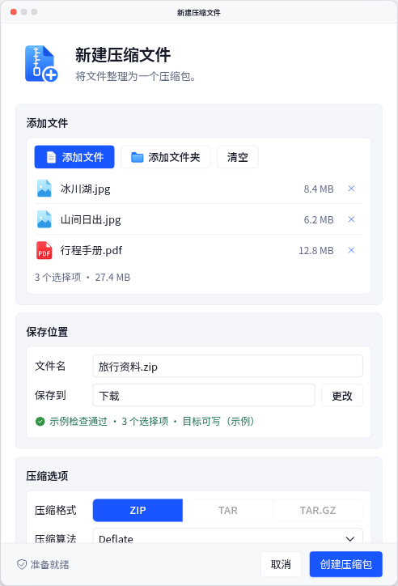
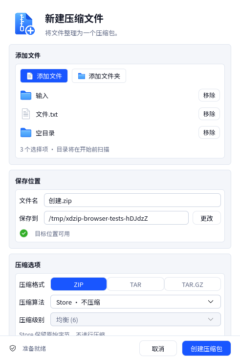
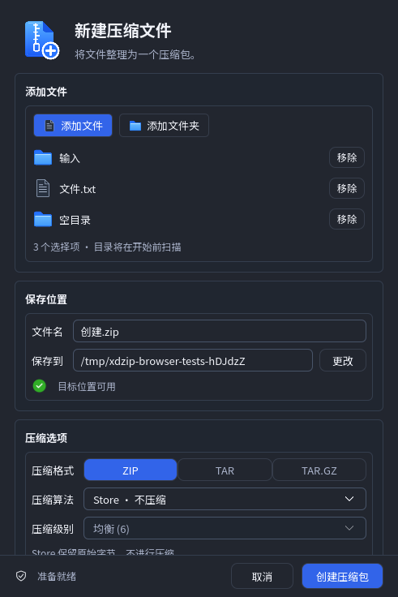
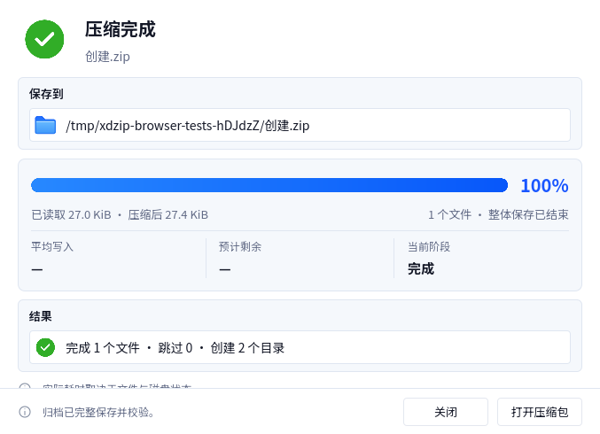
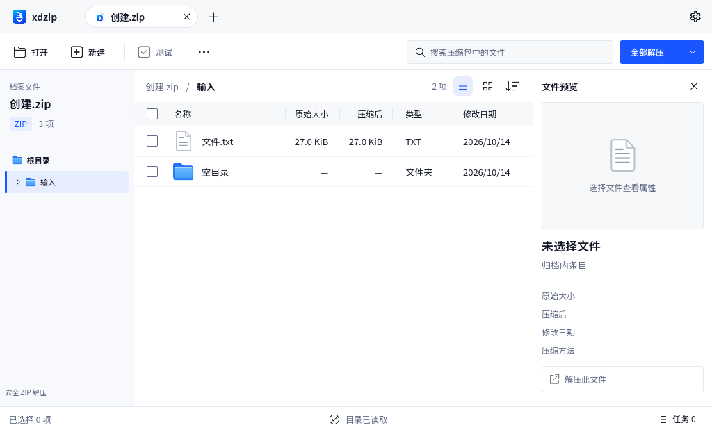

xdzip — WP-10 ZIP 创建
能力与验收状态，可操作 HTML，进度窗口正常密度
图片保留原始捕获像素；列宽仅用于浏览。HTML 为示例数据，Qt 为自有临时文件。Qt 正常客户区宽 491，标题 20、正文 13、字段高 28；系统装饰不包含在 Qt grabWindow 中。原稿展示初始视觉方向，TAR／TAR.GZ 在实现中禁用，footer 采用共享正常字号。
高保真 C01 原稿

HTML，正常 100%

捕获回执
Qt，DPR 1

实际节点坐标
Qt 深色

完整保存后

重新打开 ZIP

独立 ZIP/ZIP64 互操作与测量，本地验证记录
Linux / Qt6.8.2 / offscreen / software；这些捕获不证明 macOS 原生桌面装饰、输入法、GPU 或独立安全审查。